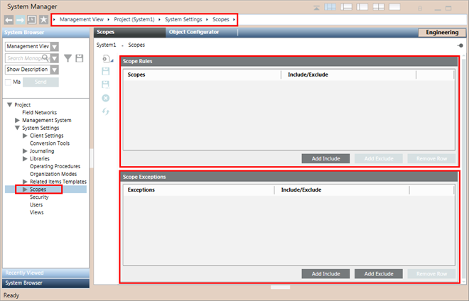
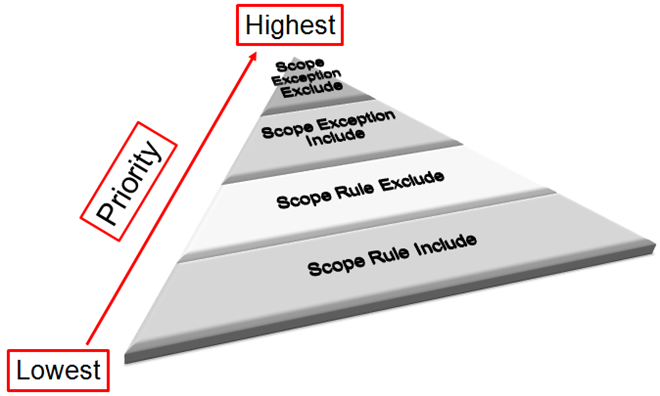

Scopes Workspace
Scopes are accessed in Management View, under Project > System Settings > Scopes. They may be further organized into subfolders under the main Scopes folder.
In Engineering mode, when you select an existing Scope definition or start configuring a new one, the Scopes tab displays.
It contains the list of settings required to configure Scope Rules and Scope Exceptions.
It also contains the Scopes toolbar which lets you to perform various operations.

Scopes Toolbar
The Scopes toolbar contains the following icons:
Scopes Toolbar | ||
Icon | Name | Allows you to... |
| New | Open a submenu where you can choose to: New definition and New folder. |
| New definition | Create a new Scope definition. |
| New folder | Create a new Scope folder. |
| Save | Save the configuration of the currently selected Scope definition or save a newly created and configured Scope definition. |
| Save As | Save a copy of the currently selected Scope definition or create a new Scope definition based on the current selection. |
| Delete | Remove the current Scope definition or Scope folder and delete its entire configuration from the System Browser tree. |
| Remove All Invalid Entries | Remove all invalid (indicated by red) entries at once. |


Scope Rules
A Scope Rule lets you configure a rule that describes a set of system objects to be included or excluded from a Scope definition.
You create a Scope Rule using hierarchical nodes and their subtrees in the following Views:
- Management
- Application
- Logical
- Physical
- User-defined
You can define a Scope Rule by means of Scope Rule Include nodes and/or Scope Rule Exclude nodes. Scope Rule Exclude nodes can only be children of Scope Rule Include nodes. Scope Rule Exclude nodes are a subtree of a Scope Rule Include node.
Scope Rules Section Fields | |
Item | Description |
Scopes1) | Indicates the full path of the node (system object) dragged-and-dropped. |
Scope Rule Include | Specifies inclusion of a node and its entire subtree in a Scope Rule. |
Scope Rule Exclude2) | Specifies exclusion of specific nodes and their subtrees from the Scope Rule Include node. |
Add Include | Adds an empty Scope Rule Include row. In one row you can add only one node (system object) from the System Browser. If you select multiple objects and drag-and-drop them to the Scope Rule Include row, only the top most selected object will be added. |
Add Exclude | Adds an empty Scope Rule Exclude row as a child of the selected Scope Rule Include row. In one row you can add only one node (system object) from the System Browser. If you select multiple objects and drag-and-drop them to the Scope Rule Exclude row, only the top most selected object will be added. |
Remove Row | Deletes the selected row. |
1) | An asterisk (*) indicates that the dragged-and-dropped node from System Browser is a subtree. |
2) | The Scope Rule Exclude node is always a child of a Scope Rule Include node. |
Behavior of a Dragged-and-Dropped Object onto Scope Rules
The following table shows the behavior of a dragged-and-dropped system object onto Scope Rules.
Scope Rules | |
System Object is Dropped Into | System Behavior |
A blank space within Scope Rules | Adds a new Include row along with the hierarchical path of the dropped system object. |
An existing empty Scope Rule Include row | Adds the hierarchical path of the system object in the empty Scope Rule Include row. |
An existing empty Scope Rule Exclude row | Adds the hierarchical path of the system object in the empty Scope Rule Exclude row. |
A configured Scope Rule Include row | A message displays and asks you what to do: |
A configured Scope Rule Exclude row | A message displays and asks you what to do: |
Scope Exceptions
Scope Exceptions allow you to configure Scope Exceptions Include and/or Exclude nodes in a Scope definition. They have precedence over Scope Rules. Scope Exceptions can add a single object to a Scope, exclude a single object from a Scope, or exclude all objects referenced by a subtree from a Scope.
You can create a Scope Exception by using hierarchical nodes and/or node subtrees in views (Management/Application/Logical/Physical/User-defined). A Scope Exception is defined by means of Include Exception node and/or Exclude Exception node.
You can define a Scope Exception for an object to be included in or a node/object subtree to be excluded from a Scope definition.
Scope Exceptions Section Fields | |
Item | Description |
Scopes1) | Indicates the full path of the node (system object) dragged-and-dropped. |
Scope Exception Include node | Specifies inclusion of a node in a Scope Exception. You can include multiple nodes in a Scope Exception Include node by selecting the nodes in the System Browser using CTRL or SHIFT and thereafter adding them to an empty area in the Scope Exceptions section using drag-and-drop. |
Scope Exception Exclude node2) | Specifies exclusion of specific node or subtree in a Scope Exception. You can include multiple nodes in a Scope Exception Exclude node by selecting the nodes in the System Browser using CTRL or SHIFT and thereafter adding them to an empty space in the Scope Exceptions section using drag-and-drop. |
Add Include | Adds a Scope Exception Include row. In one row you can add only one node (system object) from the System Browser. If you select multiple objects and drag-and-drop them to the Scope Exception Include row, only the top most selected object will be added. |
Add Exclude | Adds a Scope Exception Exclude row. In one row you can add only one node (system object) from the System Browser. If you select multiple objects and drag-and-drop them to the Scope Exception Exclude row, only the top most selected object will be added. |
Remove Row | Deletes the selected row. |
1) | An asterisk (*) indicates that the dragged-and-dropped node from System Browser is a subtree. |
2) | A Scope Exclude Exception node can be a node or a subtree from a hierarchy of a selected view. |
Behavior of the Dragged-and Dropped-Object onto Scope Exceptions
The following table shows the results of dragging-and-dropping a system object onto the Scope Exceptions section.
Scope Exceptions | |
Place of Drop of a System Object | System Behavior |
Blank space within the Scope Exceptions | A message displays and asks you what to do: |
An existing empty Scope Exception Include row | Adds the hierarchical path of the system object in the empty Scope Exception Include row. |
An existing empty Scope Exception Exclude row | Adds the hierarchical path of the system object in the empty Scope Exception Exclude row. |
A configured Scope Exception Include/Exclude row | A message displays and asks you what to do: |
Scope Rules/Exceptions Priority
The Scopes application works by assigning a priority level for each condition in a Scope Rule or Scope Exception.
In a Scope definition, a Scope Exception has precedence over a Scope Rule while displaying the configured system objects. The priority for displaying the system objects for a user in the Desigo CC system is as follows:
- Scope Exceptions Exclude row
- Scope Exceptions Include row
- Scope Rules Exclude row (child of Include row)
- Scope Rules Include row

The Scope Rule Include has the lowest priority: if a node contained in it is excluded anywhere in the Scope, that node is not visible.
The Scope Rule Exclude has the third highest priority: it can only exclude things from a Scope Rule Include. The Scope Rule Exclude can be used to exclude a node and all of its children, but cannot be used to only exclude a node but not its children.
The Scope Exception Include has the second highest priority: if a node is part of a Scope Exception Include it is always visible provided it is not part of a Scope Exception Exclude. The Scope Exception Include only works on a node by node basis.
The Scope Exception Exclude has the highest priority: even if a node/subtree is included somewhere else in the Scope it still will not be visible if it is a part of a Scope Exception Exclude. The Scope Exception Exclude can exclude both single nodes or nodes and all of their children.